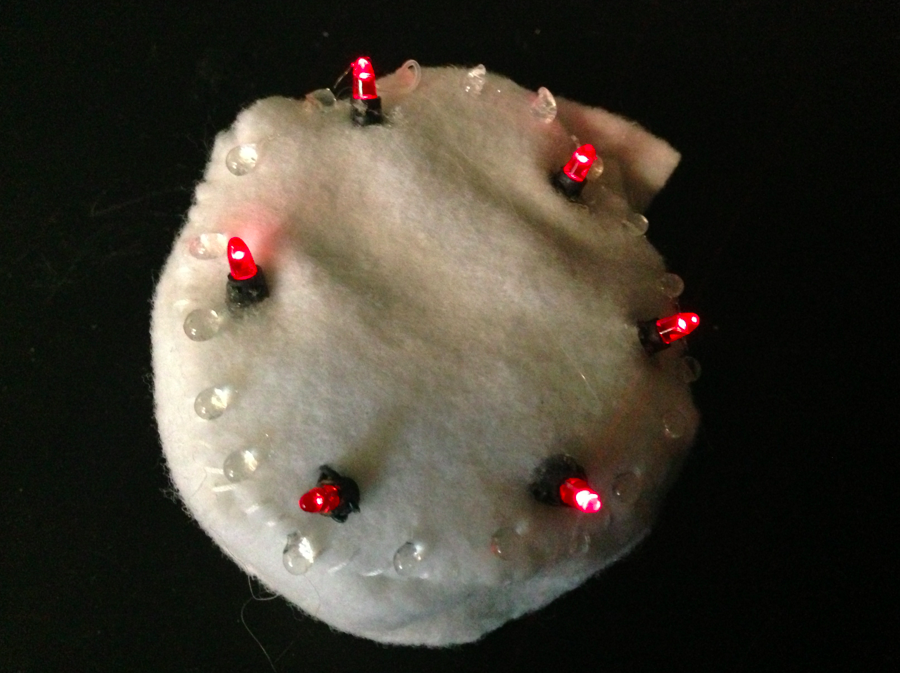
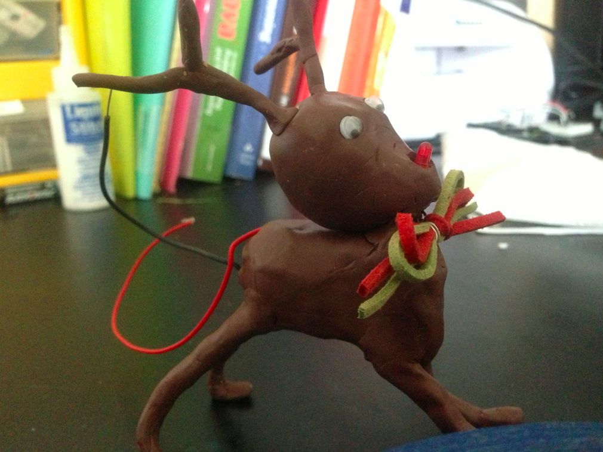

|
Sewn Circuit and recycled LEDs are always good resources for celebrate special christmas ever! Felts, LEDs from a children toy, clays, and coin batteries inspire me to be a player, designer, and a circuit-or. Let's be a tinker at home with these daily materials. LED Christmas Cake  In order to use recycled LEDs cut from old toy, cut the tip and find positive and negative poles. Sew a white felts to make a fresh cream cake by a cylinder shape. Connect all positive poles of LEDs over the top, and also connect each negative pole all together. It is important to separate two lines to avoid short. Sew a snap to the end of the positive connection, and sew the counterpart of the snap with the other side of the entire circuit. By connecting coin battery inside and closing the snap, we could celebrate our christmas with permanently lighting red candles! LED Mr.Rudolff  Make Mr. Rudolf's face with a chunk of clay. You might need to embed braided wire into clay to stand rudolf's horn and his legs. Insert a red LED into his face and connect the jumper wire to the coin battery which will be also embedded into the body of the Rudolf. If you want to use a tri-colored LED and let rudolf's nose change colors when his tail is connected as a switch, you need a micro-controller the program is written and two more input connection to the controller from this LED. Be aware a negative and a positive pole is not shorted but be connected to the LED's legs, without disconnection caused by clays. |